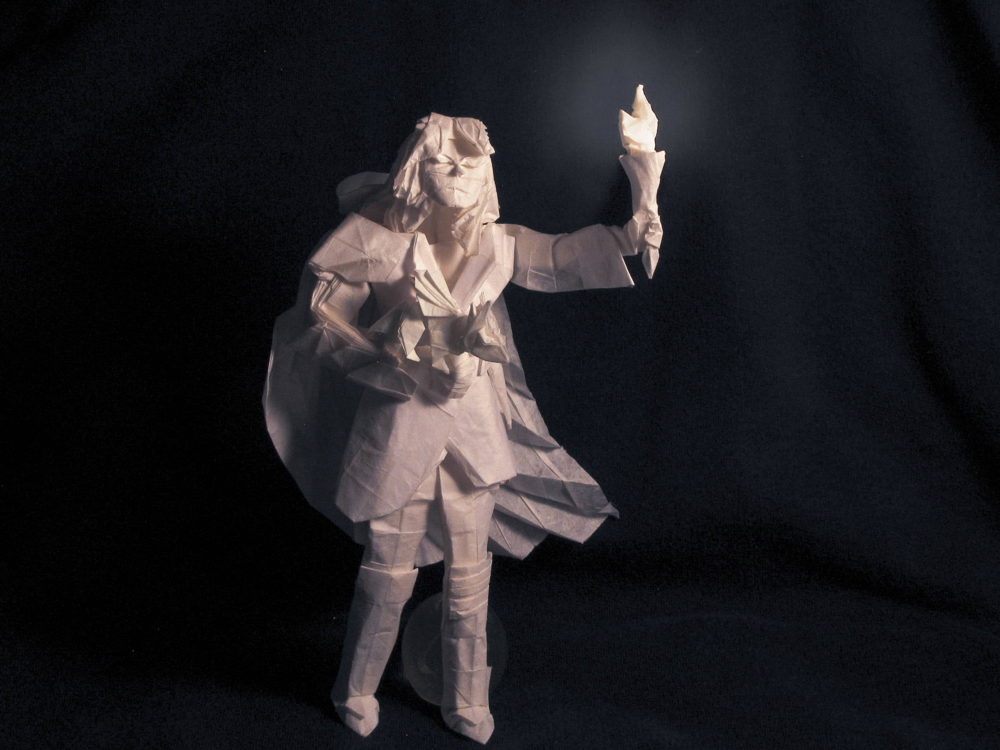
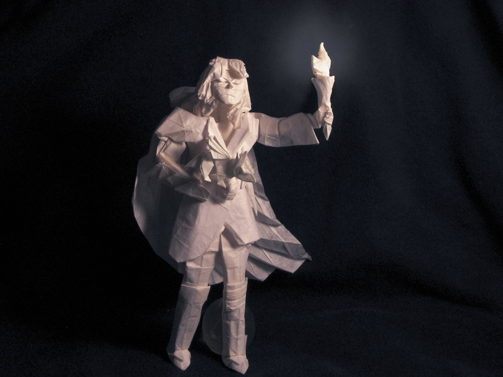

Back to portfolio
The Dragon Keeper
 

Designed and folded February 2021
Paper: 70cm wenzhou
This model was one of the first real limit test of how complex of a model I could get from a 70cm square. I would like to revisit this one day though, I feel like I did not do the hair and face (usually the biggest challenges) as well as I could have.

Each part of the model (the dragon, torch, hood, tunic, etc) was carefully test folded on its own
and then packed into the square for the final fold. This is usually the way things go for complex
designs like this.
Grid: 60x60